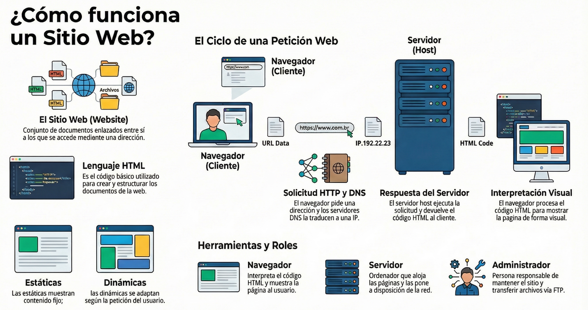
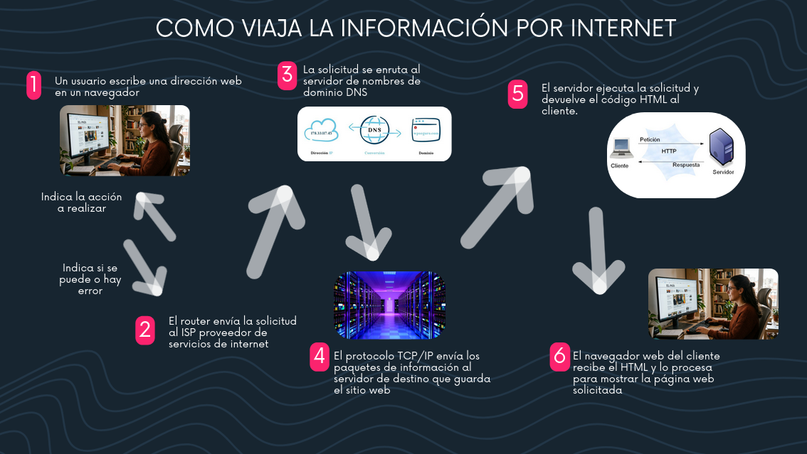

Conceptos de la Red
- Página Web: Un documento electrónico digital programado en código (como HTML) que contiene los datos multimedia básicos. Puede ser estática (muestra contenido fijo) o dinámica (se adapta según las peticiones).
- Sitio Web (Website): El grupo completo de documentos y páginas web conectadas entre sí que forman un espacio accesible bajo un mismo enlace o dominio raíz.

Diagrama 1: El ciclo de petición del navegador y herramientas del servidor.
🌍 ¿Cómo viaja la información por Internet?
Al pulsar un enlace o escribir una URL en la barra de direcciones del navegador, se activa un intercambio de datos instantáneo estructurado paso a paso:
1. Solicitud inicial y envío al ISP
El usuario escribe la dirección web. El Navegador (Cliente) indica la acción a realizar. Inmediatamente, el router de casa envía esa solicitud al ISP (Proveedor de Servicios de Internet).
2. Traducción DNS (Sistema de Nombres de Dominio)
Como las máquinas se comunican mediante números, la solicitud se enruta a un servidor DNS. Este se encarga de traducir el dominio legible (ej. tusitio.com) en una Dirección IP numérica real.
3. Protocolo TCP/IP y Fragmentación de Datos
El protocolo TCP/IP divide la información de la web en pequeños paquetes de datos. Estos paquetes viajan a través de la red física hasta el servidor de destino que guarda de forma física el sitio web.
4. Procesamiento HTTP/HTTPS y Respuesta
El Servidor (Host) ejecuta la solicitud a través del idioma estándar HTTP (o HTTPS cifrado de forma segura) y devuelve el código estructurado en HTML de vuelta al cliente.
5. Interpretación Visual del Navegador
El navegador web del cliente recibe el código HTML empaquetado, lo procesa, interpreta los estilos y los renderiza en la pantalla de manera organizada para mostrar el entorno visual final.

Diagrama 2: Las 6 fases del flujo de información en la red.